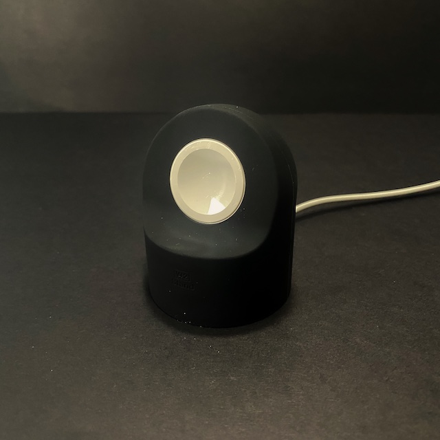
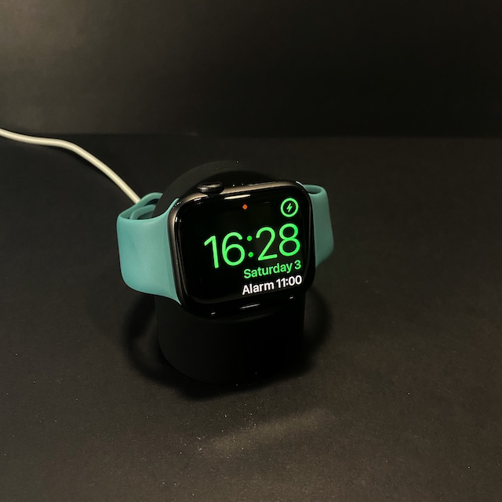

elago W2 Stand Review Review
22/4/2021
Introduction
If you have an Apple Watch, you will know the struggle with keeping your Apple Watch charger on the your desk or bedside table. This cheap silicon gadget will help your watch be useful as a miniature table clock and easier to charger and remove.> 
Why did we purchase this?
When we were using the Apple Watch, we found it it was difficult to find a good position to mount the charging puck to a bedside table. Our initial solution was to add adhesive to the bottom of the puck so it would make it easier to place the Apple Watch in the puck during charging. However as there are bands that are a loop (such as Apple’s Solo Loop and the popular Milanese strap), they require the puck to be moved so that the back side of the loop hit the table. Therefore we looked for cheap alternatives that make the desk look great and make good use of the Apple Watch as a mini clock on your work table or night stand.
We found this on Amazon for under £9, it was highly rated and looks minimalist which is nice for simple look.
What’s in the Box?
Inside the box was just the silicon Apple Watch stand, the box in minimalist in preliminary white with a small decal of which colour you ordered on the front of the box. Elago says their packaging to be simple and sustainable as they use FSC certified wood in their paper packaging. As it is made from pure paper, it means their packaging is 100% recyclable. Usually most packaging has a laminate foil which is harder to recycle and leaves a bigger carbon footprint.
For the ink, they use soy ink as it makes it easier to remove for paper recycling and farming soybeans is gentler on the environment than other ink alternatives. It also has lower levels of volatile organic compounds, which reduces air pollution. The also use embossed printing which reduces the use of ink entirely.
Supported devices
This stand is just a block of silicon which fits the original Apple Watch puck included with your Apple Watch or purchased separately. It works with both the plastic or metal enclosure puck. As the design of the puck hasn’t changed since series 0, this stand will house all the previous generation pucks. This means all Apple Watches will be compatible with this design.
All devices charging in the right orientation will make the watch go into “Night-mode” (see photo).
Design
The stand comes with with a hollow base so you can feed the Apple cable through the base of the the stand. There is a recessed area for the puck and a small text inside the silicon mould.
There is also a small cutout at the rear of the stand where you can feed the cable through.
There a multiple colours for this stand, including ones with a classic Mac look to a Gameboy inspired design which is perfect for any retro gamers out there for the nostalgic feel!
Issues
Not really any issues to comment on, the product is simple and does what it advertises on the box!
Conclusion
The build quality of the silicon is great, we purchased another one in lavender grey as it was so useful! The simple but brilliantly engineered product with all the cutouts being precise and having a snug fit! Being able to use your watch as a night stand clock is great if you don’t want to use the sleep tracking features. We will look at other products by this American company elago in the future!